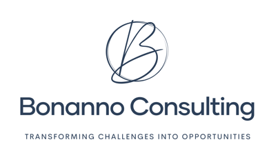

Prozesse vereinfachen
Doppelarbeit erkennen, Zuständigkeiten klären und Abläufe so dokumentieren, dass Ihr Team damit arbeiten kann.

Beratung für kleine und mittlere Unternehmen
Ich vereinfache Prozesse, verbessere ERP und CRM und entwickle KI-Anwendungen für KMU aus verschiedenen Branchen.
Leistungen
Doppelarbeit erkennen, Zuständigkeiten klären und Abläufe so dokumentieren, dass Ihr Team damit arbeiten kann.
Datenpflege und Schnittstellen verbessern, damit Aufträge, Kunden und Kosten leichter im Blick bleiben.
Geeignete Aufgaben auswählen, einen Prototyp mit Ihrem Team testen und die Anwendung bei Bedarf in bestehende Abläufe integrieren.
Prioritäten, Rollen und nächste Schritte klären und die Einführung neuer Tools oder Systeme begleiten.
Anwendungsbeispiele
KI liest relevante Angaben aus Dokumenten aus. Ihr Team prüft die Vorschläge und übernimmt sie ins System.
Ein KI-Assistent beantwortet häufige Fragen anhand freigegebener Anleitungen und verweist auf die Quellen.
Vertrieb und Fertigung sehen denselben Status im ERP, statt mehrere Excel-Listen abzugleichen.
Über mich
Zehn Jahre lang war ich CEO von Coconut Capital und leitete ein zwölfköpfiges Team. Dort war ich auch für Personal, interne Organisation und Qualitätssicherung verantwortlich.
Als selbstständiger Berater bin ich Ihr direkter Ansprechpartner. Ich verbinde diese Führungserfahrung mit meiner Praxis in IT-Systemen, Projektmanagement und Prozessoptimierung, auch in der Fertigung.
Kontakt
Schildern Sie mir Ihren Engpass oder Ihre Idee. Wir besprechen, welcher nächste Schritt sinnvoll ist.
carmelo.bonanno@bonanno-consulting.comFür Prozessfragen, ERP- und CRM-Projekte oder eine konkrete KI-Idee.
Kostenloses Erstgespräch vereinbaren